Classic Monitor
Panoramica
Il monitor classico applicazione Android visualizza le informazioni dal regolatore di carica convenzionale. Il controller di carica deve essere collegato e configurato per la rete locale, vorresti fare riferimento alla documentazione del regolatore di carica classico forniti da Solar Midnite. . Il dispositivo Android deve essere collegato alla stessa rete locale.
Con il port in avanti e DDNS un servizio, il normale monitor in grado di connettersi al controller con l'aggiunta di una connessione al l’Internet utilizzando il nome di dominio fornito dal servizio DDNS e il numero di porta pubblica configurata nel router. Un servizio DDNS gratuito è disponibile dal www.noip.com, il router deve supportare il servizio DDNS selezionato.
Questa applicazione supporta attualmente i modelli Classic & Classic Lite 150, 200, 250 regolatori di carica, la serie Classic SL non è supportato perché non dispone di una connessione di rete, supporto di base per regolatori di carica MPPT TriStar anche incluso.
L'applicazione visualizza una serie di varie schede a seconda della configurazione;
Uno o più convenzionale non WhizbangJr, le schede sono:
Alimentazione | Energia | Temperatura | Journal Calendario Giorno | Giorno Grafico Journal | Ufficiale Grafico Tempo | Informazioni | Messaggi | A proposito
Un classico con un unico WhizbangJr, le schede sono:
lo stato di carica | Caricare | Potenza | Energia | Capacità | Temperatura | Journal Calendario Giorno | Giorno Grafico Journal | Ufficiale Grafico Tempo | Informazioni | Messaggi | A proposito
Più di un classico con un WhizbangJr, le schede sono:
lo stato di carica | System | Potenza | Energia | Capacità | Temperatura | Journal Calendario Giorno | Giorno Grafico Journal | Ufficiale Grafico Tempo | Informazioni | Messaggi | A proposito
MPPT Morningstar Tri-Star, le schede sono:
Alimentazione | Energia | A proposito
Quando si dispone di più di un controller e un WhizbangJr, un pulsante di scelta è visualizzata sul calendario e le schede che consente di vedere l'energia raccolta dal controllore o il sistema (somma di tutti i controller).
Navigazione
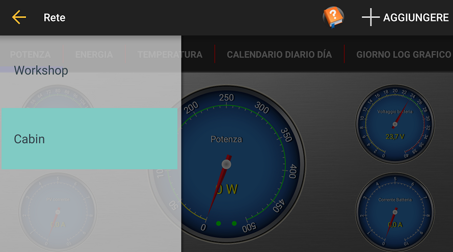La barra di navigazione si visualizza quando si fa scorrere dal bordo sinistro del app verso destra o toccando l'icona "hamburger", a sinistra della barra delle operazioni.
Viene visualizzato ogni control monitorato dalla app.
È possibile rimuovere una voce facendola scorrere verso destra.
Un'icona esclamativo arancione si visualizza accanto a una voce quando l'applicazione non è in grado di comunicare con il controller.
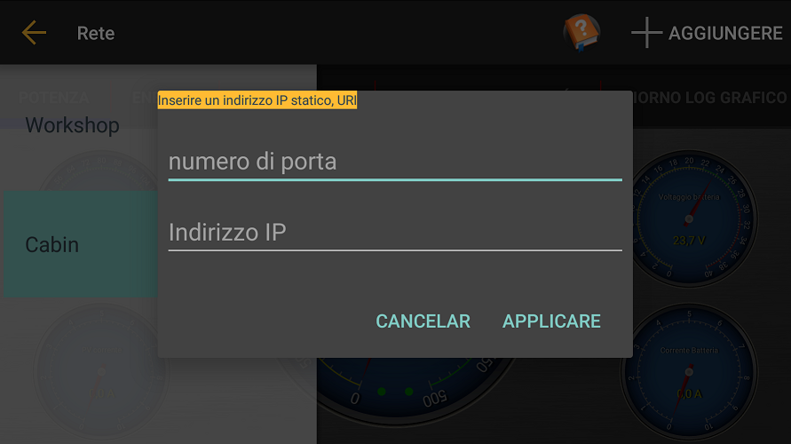
È possibile inserire un indirizzo di controllo statica selezionando l'azione +ADD. Questo vi permetterà di inserire il nome della porta e rete o l'indirizzo IP del controller.
Impostazioni
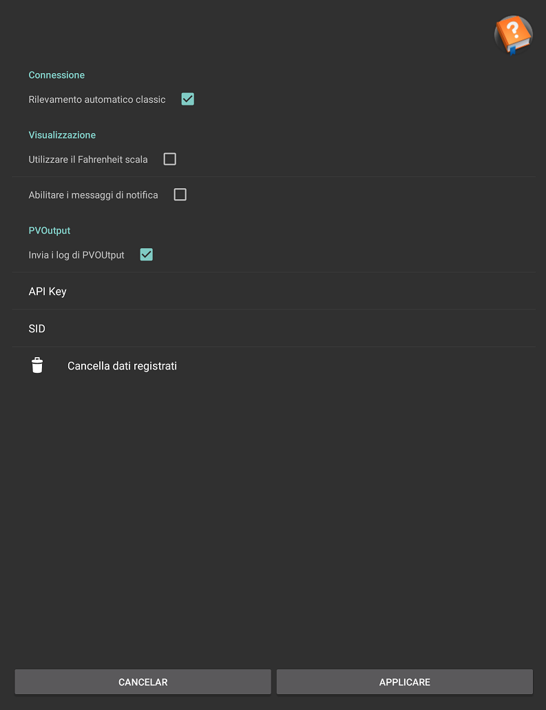La finestra di dialogo Impostazioni viene visualizzata premendo l'icona ingranaggio in alto a destra della barra delle operazioni.
Classica Auto Detect: L'applicazione rimane in ascolto di pacchetti UDP sulla rete locale per un Controller Classico disponibile non impostato quando questa opzione è selezionata. Quando la sua selezione, ogni classico deve essere aggiunto manualmente utilizzando il pulsante Aggiungi + quando viene visualizzato il cassetto navigazione di sinistra.
Usa scala Fahrenheit: La temperatura viene visualizzata in gradi Fahrenheit il calibri, il calendario e la grafica Celsius contrario.
Mostra messaggi pop-up: I messaggi vengono visualizzati al centro dello schermo ogni volta che i cambiamenti di stato di carica e quando uno De-selezionare qualsiasi messaggio.
PV Output

PVOutput: Quando si attiva PVOutput e si fornice una chiave e systemId (SID), l'applicazione scarica la energetico giornaliero (kWh) salvato dal PVoutput.org classico sul sito web.
Il pulsante Elimina salvato registro ripristina l'ultima data di scarica, l'applicazione poi ri-scaricato fino a 30 giorni di quotidiani registrati.
L'applicazione scarica le ultime letture per ogni giorno dopo l'ultimo scarico per 30 giorni.
Avrete bisogno di ottenere un conto in PVOutput.org per ottenere una chiave e SID.
Un'icona PVOutput sulla barra delle operazioni e seguire la navigazione sul sito PVOutput.org.
Lo stato di carica
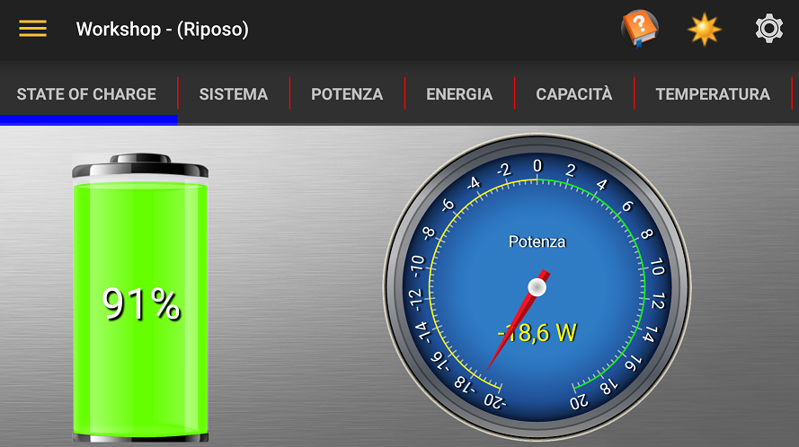La scheda stato di carica viene visualizzato quando si dispone di almeno un configurato con un WhizbangJr classico.
L'indicatore bidirezionale è in grado di visualizzare la corrente o il potere, premere il manometro per alternare la selezione. Una lettura negativa indica che la batteria è scaricata, una lettura positiva indica carico.
Sistema
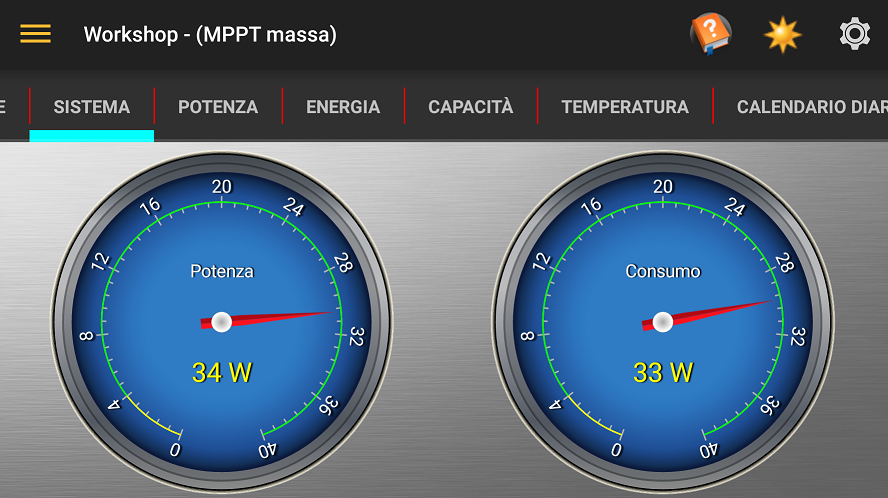La scheda Sistema viene visualizzato quando si dispone di più di un caricatore di controllo e di avere almeno un configurato con un WhizbangJr classico.
Il misuratore di potenza visualizza la quantità di potenza generata dal sistema (la somma di tutti i controller).
Il scheda de consumo di energia consumata dal sistema, essa viene calcolata dalla potenza generata meno energia per inserire le batterie.
Consumo
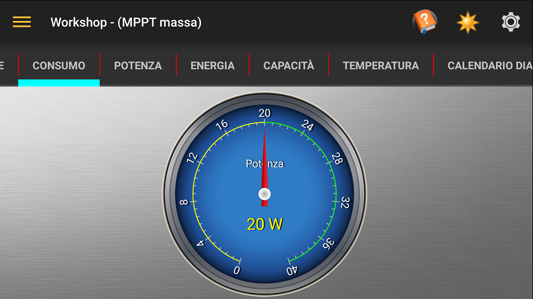Il display di misurare il consumo di energia consumata dal sistema, essa viene calcolata dalla potenza generata meno energia per inserire le batterie.
Potenza
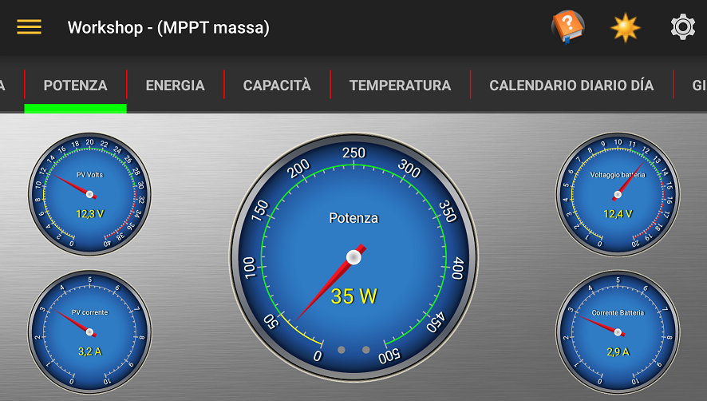Dalla scheda di Potenza si visualizza la tensione e la corrente al controller dei pannelli solari e la tensione e corrente, permettendo il controller per le batterie e il gioco di potere risultante per il controller selezionato.
I principali LED di Power includono vicino al fondo del misuratore. Il LED di sinistra è Aux 1 e il diritto LED Aux 2.
Energia
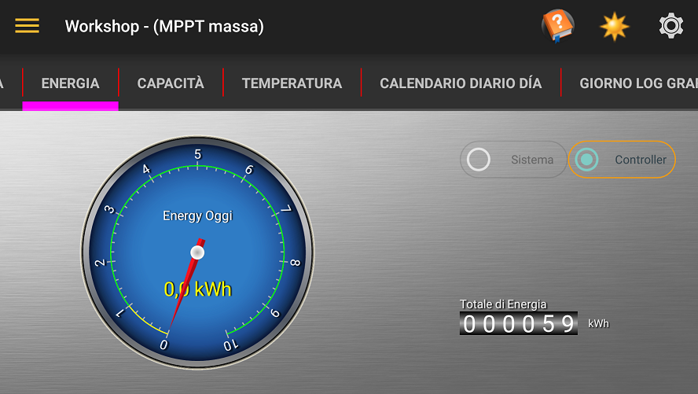La scheda mostra la quantità di energia raccolta oggi dal controller selezionato e la quantità totale di energia raccolta dal controller da quando è stato commissionato.
Quando si dispone di più di un controller e un WhizbangJr, un pulsante di scelta è visualizzata per consentire vedere l'energia raccolta dal controllore o il sistema (somma di tutti i controller).
Capacità
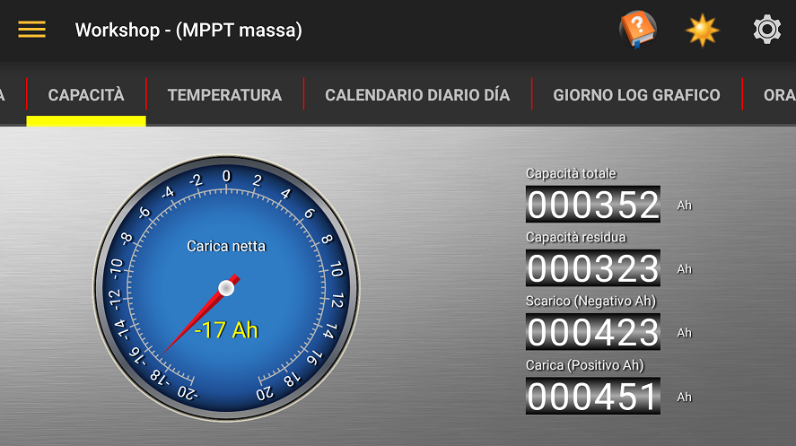La scheda Capacità mostra l'equilibrio di energia in Amp / ora rimanente nelle batterie.
Vorresti fare riferimento alla documentazione Midnite Solar WhizbangJr per ulteriori informazioni.
Grafico dal vivo

La Carta dal vivo visualizza il volt della batteria (rosso), corrente di alimentazione (giallo) e uno stato di indicatore di carica. Se viene rilevato un WhizbangJr, il grafico mostrerà anche la carica della batteria / corrente di scarica (ciano).
Lo stato di carica (linea nella parte inferiore del grafico) display come segue;
- Non definito: White
- Riposo: Nero (codice 0)
- Assorbire: arancia (codice 3)
- BulkMPPT: verde (codice 4)
- Float: Blu (codice 5)
- FloatMPPT: Ciano (codice 6)
- Pareggiare: Rosa (codice 7)
- HyperVOC: Rosso (codice 10)
- EQMPPT: viola (codice 18)
Temperatura
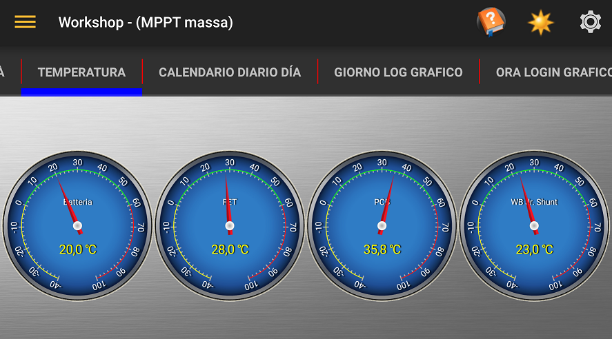La scheda visualizza la temperatura in gradi Celsius o Fahrenheit batteria, FET interni e PCB, e se avete un WhizbangJr, la temperatura di bypass.
Grafico del mese
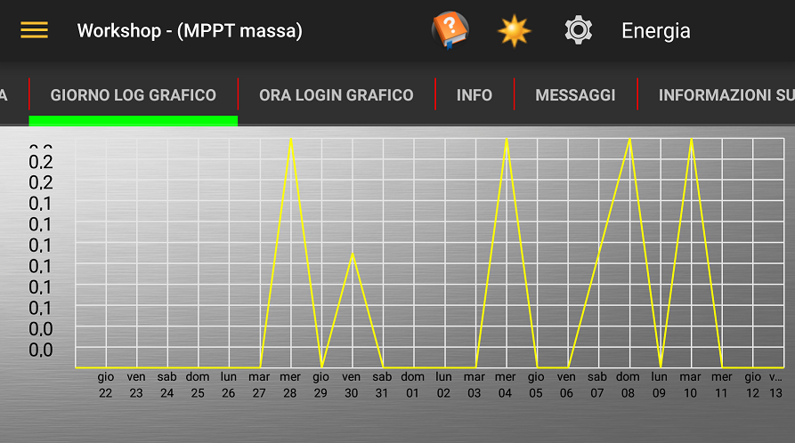Il grafico Journal visualizza informazioni registrate dal classico per il calendario, un menu è in alto a destra della barra delle azioni consente di selezionare il valore tracciato.
Grafico giornaliero
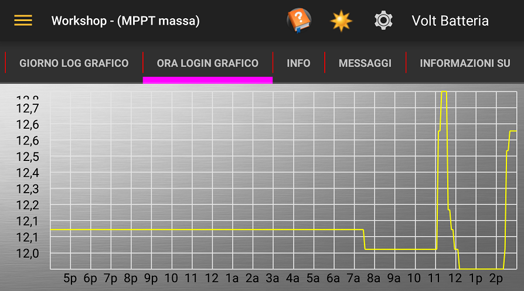Il grafico Journal visualizza informazioni registrate dal classico per il giorno corrente, un menu è in alto a destra della barra delle azioni consente di selezionare il valore tracciato.
Il Journal Calendario di Giorno
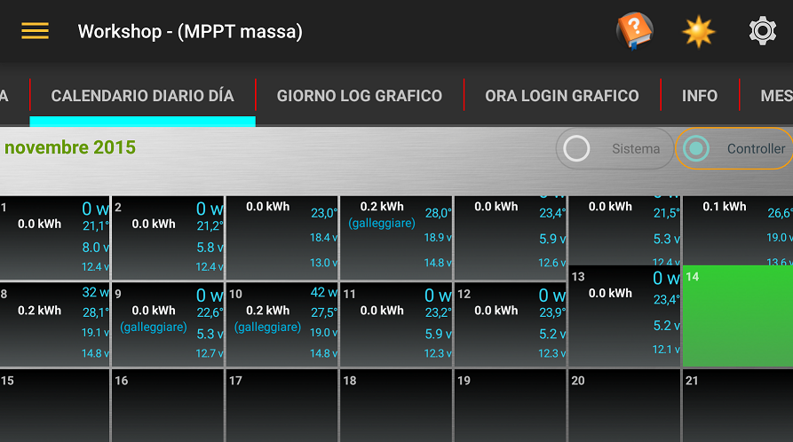Il Journal Calendario di Giorno mostra l’energia raccolta per ogni giorno del mese con il PV massima, tensione della batteria, la temperatura e la potenza massima per la giornata.
Giorni in cui il sistema raggiunge float o pareggiare sono contrassegnati "(float)" e (EQ).
Se il calendario non è completamente visualizzato sullo schermo, è possibile scorrere la posizione trascinando la parte nera del calendario.
Mesi precedenti possono essere visualizzati facendo scorrere la parte grigia del programma su o giù.
Informazioni

La scheda Informazioni visualizza le informazioni della piastra della caldaia del dispositivo con l'ultimo valore del fotovoltaico VOC.
Messaggi
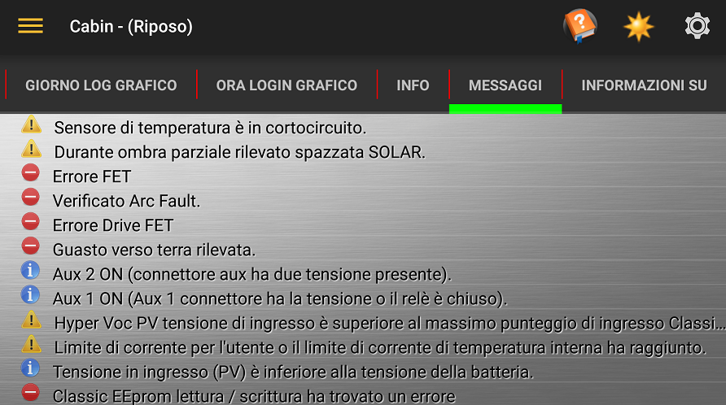La scheda Messaggi visualizza i messaggi informativi e di errore di avviso sul controller indicati da un'icona all'inizio del messaggio.